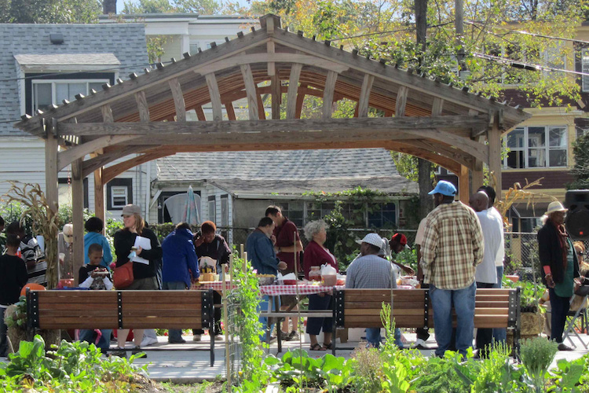
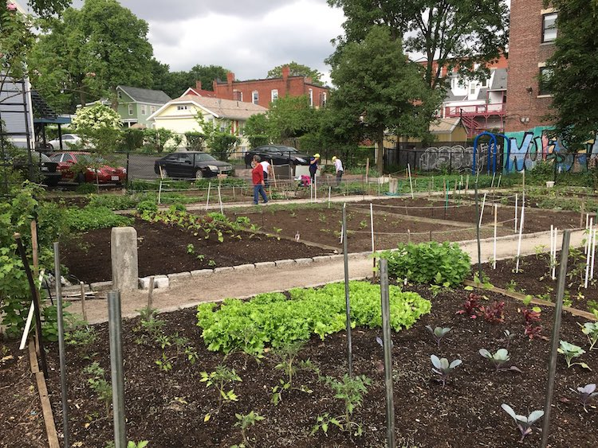
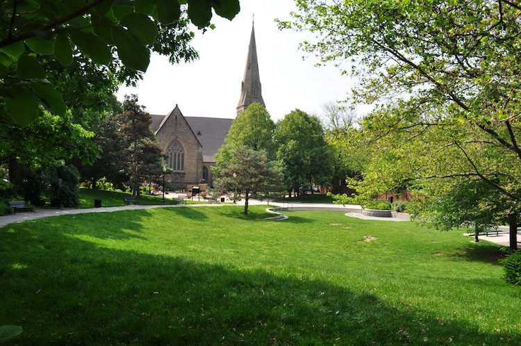

When we started the Public Space Invitational in 2014, we asked all of you a simple question: how would you make our public spaces more delightful and beautiful? Your response was humbling, and after evaluating hundreds of ideas over the years, we've had the privilege to develop ideas with 30 teams across the majority of Boston's neighorhoods.
Our focus has always been on shared spaces. However, in the age of physical distancing, many of us are now confined to our homes and find it increasingly difficult to connect with our neighbors. While we can no longer ask people to gather together outside, we would like to try to bring the joy of being outdoors to places closer to home.
In partnership with The Trustees and TD Bank, we are seeking 6 artists and designers to help us connect the residents of Boston to the outdoors. Successful applicants will be asked to create or decorate a mix of window boxes, planters, pots, and birdhouses that will be installed outside homes throughout Boston. We will then work with selected teams to distribute these pieces to residents from three hubs - Nightingale Community Garden, El Jardin de la Amistad, and Worcester Community Garden. The Trustees will also provide guides and videos to teach residents how to plant items in planters and pots.
You can distribute your pieces at one of three gardens: Nightingale Community Garden in Dorchester, El Jardín de la Amistad in Roxbury, or Titus Sparrow Park in the South End.
*Map tiles by Stamen Design, under CC BY 3.0. Data by OpenStreetMap, under CC BY SA.

Nightingale Community Garden is a 1.25-acre garden with 133 garden plots in Dorchester. It has a central concrete plaza with a large sun shelter, which is ideal for a variety of events.

Photo Credit: Nuestra Comunidad
El Jardín de la Amistad is a ~11,000 square foot community garden located on Dudley Street in Roxbury. In addition to the plots, El Jardín features a grassy space next to the garden and a brick patio inside - a good spot for performances, storytelling events, or dinners.

Titus Sparrow Park is located in Boston's South End and features 15 community garden plots, a basketball court, a tennis court, in addition to large gathering spaces and a playground for children.
You can apply here.
Make sure your application is submitted by April 27th, 2020 at noon.
Project Guidelines
Project guidelines Make sure your application is submitted by April 27th, 2020 at noon We will notify selected artists by May 1st and selected artists must have their pieces ready by May 22. We will coordinate with you regarding pick-up and distribution.
More questions? Email us at invitational@newurbanmechanics.org.